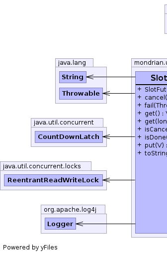
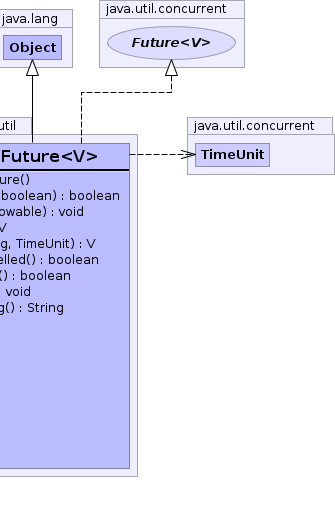

public class SlotFuture<V> extends Object implements Future<V>
Future that completes
when a thread writes a value (or an exception) into a slot. |
 |
| Constructor and Description |
|---|
SlotFuture()
Creates a SlotFuture.
|
| Modifier and Type | Method and Description |
|---|---|
boolean |
cancel(boolean mayInterruptIfRunning) |
void |
fail(Throwable throwable)
Writes a throwable into the slot, indicating that the task has failed.
|
V |
get() |
V |
get(long timeout,
TimeUnit unit) |
boolean |
isCancelled() |
boolean |
isDone() |
void |
put(V value)
Writes a value into the slot, indicating that the task has completed
successfully.
|
String |
toString() |
public SlotFuture()
public boolean cancel(boolean mayInterruptIfRunning)
The SlotFuture does not know which thread is computing the result
and therefore the mayInterruptIfRunning parameter is ignored.
public boolean isCancelled()
isCancelled in interface Future<V>public V get() throws ExecutionException, InterruptedException
get in interface Future<V>ExecutionExceptionInterruptedExceptionpublic V get(long timeout, TimeUnit unit) throws ExecutionException, InterruptedException, TimeoutException
get in interface Future<V>ExecutionExceptionInterruptedExceptionTimeoutExceptionpublic void put(V value)
IllegalArgumentException - if put, fail or cancel has already
been invoked on this futurevalue - Value to yield as the result of the computationpublic void fail(Throwable throwable)
IllegalArgumentException - if put, fail or cancel has already
been invoked on this futurethrowable - Exception that aborted the computation